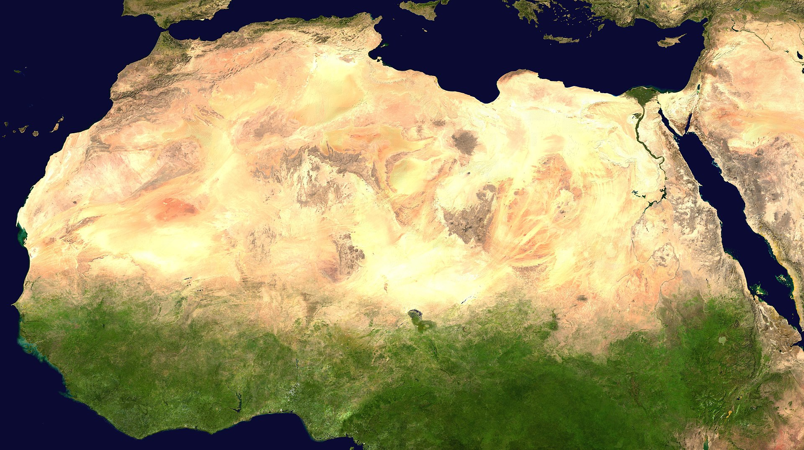
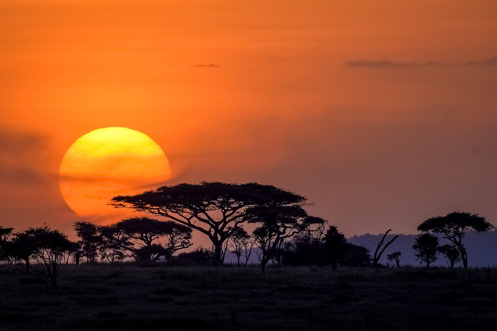
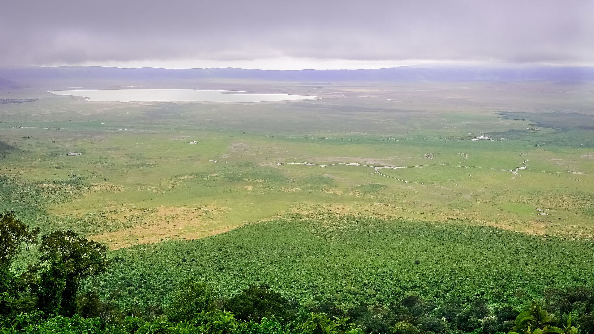
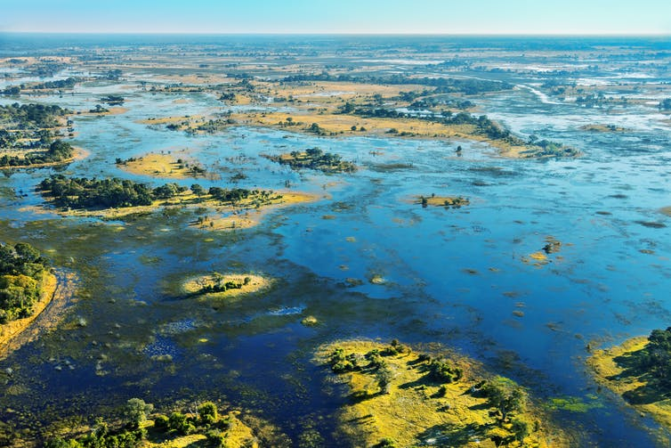
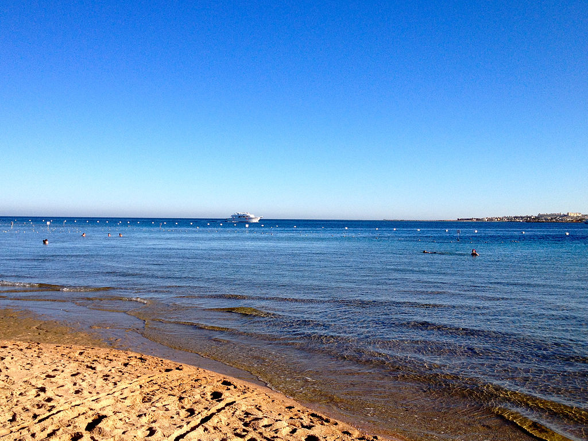

Africa is the world's second-largest and second-most populous continent, after Asia in both cases. At about 30.3 million km2 (11.7 million square miles) including adjacent islands, it covers 6% of Earth's total surface area and 20% of its land area.[7] With 1.3 billion people[1][2] as of 2018, it accounts for about 16% of the world's human population. Africa's population is the youngest amongst all the continents;[8][9] the median age in 2012 was 19.7, when the worldwide median age was 30.4.[10] Despite a wide range of natural resources, Africa is the least wealthy continent per capita, in part due to geographic impediments,[11] legacies of European colonization in Africa and the Cold War,[12][13][14][15][16] predatory/neo-colonialistic activities by Western nations and China, and undemocratic rule and deleterious policies.[11] Despite this low concentration of wealth, recent economic expansion and the large and young population make Africa an important economic market in the broader global context.
The continent is surrounded by the Mediterranean Sea to the north, the Isthmus of Suez and the Red Sea to the northeast, the Indian Ocean to the southeast and the Atlantic Ocean to the west. The continent includes Madagascar and various archipelagos. It contains 54 fully recognised sovereign states (countries), eight territories and two de facto independent states with limited or no recognition. Algeria is Africa's largest country by area, and Nigeria is its largest by population. African nations cooperate through the establishment of the African Union, which is headquartered in Addis Ababa.
Africa straddles the equator and the prime meridian making it the only continent in the world to be situated in all four cardinal hemispheres. It is the only continent to stretch from the northern temperate to southern temperate zones.[17] The majority of the continent and its countries are in the Northern Hemisphere, with a substantial portion and number of countries in the Southern Hemisphere. Most of the continent lies in the tropics, except for a large part of Western Sahara, Algeria, Libya and Egypt, the northern tip of Mauritania, the entire territories of Morocco, Ceuta, Melilla and Tunisia which in turn are located above the tropic of Cancer, in the northern temperate zone. In the other extreme of the continent, southern Namibia, southern Botswana, great parts of South Africa, the entire territories of Lesotho and Eswatini and the southern tips of Mozambique and Madagascar are located below the tropic of Capricorn, in the southern temperate zone.
Africa is home to much biodiversity; it is the continent with the largest number of megafauna species, as it was least affected by the extinction of the Pleistocene megafauna. However, Africa also is heavily affected by a wide range of environmental issues, including desertification, deforestation, water scarcity, and other issues. These entrenched environmental concerns are expected to worsen as climate change impacts Africa. The UN Intergovernmental Panel on Climate Change has identified Africa as the continent most vulnerable to climate change.[18][19]
The history of Africa is long, complex, and has often been under-appreciated by the global historical community.[20] Africa, particularly Eastern Africa, is widely accepted as the place of origin of humans and the Hominidae clade (great apes). The earliest hominids and their ancestors have been dated to around 7 million years ago, including Sahelanthropus tchadensis, Australopithecus africanus, A. afarensis, Homo erectus, H. habilis and H. ergaster— the earliest Homo sapiens (modern human) remains, found in Ethiopia, South Africa, and Morocco, date to circa 200,000, 259,000, and 300,000 years ago respectively, and Homo sapiens is believed to have originated in Africa around 350,000–260,000 years ago.[21][22][23][24][25]
Early human civilizations, such as Ancient Egypt and Carthage emerged in North Africa. Following a subsequent long and complex history of civilizations, migration and trade, Africa hosts a large diversity of ethnicities, cultures and languages. The last 400 years have witnessed an increasing European influence on the continent. Starting in the 16th century, this was driven by trade, including the Trans-Atlantic slave trade, which created large African diaspora populations in the Americas. In the late 19th century, European countries colonized almost all of Africa, extracting resources from the continent and exploiting local communities; most present states in Africa emerged from a process of decolonisation in the 20th century.
Mount Kilimanjaro (/ˌkɪlɪmənˈdʒɑːroʊ/)[8] is a dormant volcano in Tanzania. It has three volcanic cones: Kibo, Mawenzi, and Shira. It is the highest mountain in Africa and the highest single free-standing mountain in the world: 5,895 metres (19,341 ft) above sea level and about 4,900 metres (16,100 ft) above its plateau base.
Kilimanjaro is the fourth most topographically prominent peak on Earth. It is part of Kilimanjaro National Park and is a major climbing destination. Because of its shrinking glaciers and ice fields, which are projected to disappear between 2030 and 2050, it has been the subject of many scientific studies.

Sahara
he Sahara (/səˈhɑːrə/, /səˈhærə/; Arabic: الصحراء الكبرى, aṣ-ṣaḥrāʼ al-kubrá, 'the Greatest Desert') is a desert on the African continent. With an area of 9,200,000 square kilometres (3,600,000 sq mi), it is the largest hot desert in the world and the third largest desert overall, smaller only than the deserts of Antarctica and the northern Arctic.[1][2][3]
The name "Sahara" is derived from the Arabic word for "desert" in the feminine irregular form, the singular ṣaḥra' (صحراء /ˈsˤaħra/), plural ṣaḥārā (صَحَارَى /ˈsˤaħaːraː/[4][5][6][7]), ṣaḥār (صَحَار), ṣaḥrāwāt (صَحْارَاوَات), ṣaḥāriy (صَحَارِي).
The desert comprises much of North Africa, excluding the fertile region on the Mediterranean Sea coast, the Atlas Mountains of the Maghreb, and the Nile Valley in Egypt and Sudan. It stretches from the Red Sea in the east and the Mediterranean in the north to the Atlantic Ocean in the west, where the landscape gradually changes from desert to coastal plains. To the south, it is bounded by the Sahel, a belt of semi-arid tropical savanna around the Niger River valley and the Sudan Region of Sub-Saharan Africa. The Sahara can be divided into several regions, including the western Sahara, the central Ahaggar Mountains, the Tibesti Mountains, the Aïr Mountains, the Ténéré desert, and the Libyan Desert.
For several hundred thousand years, the Sahara has alternated between desert and savanna grassland in a 20,000 year cycle[8] caused by the precession of Earth's axis as it rotates around the Sun, which changes the location of the North African Monsoon

Serengeti
The Serengeti (/ˌsɛrənˈɡɛti/ SERR-ən-GHET-ee) ecosystem is a geographical region in Africa, spanning northern Tanzania.[1] The protected area within the region includes approximately 30,000 km2 (12,000 sq mi) of land, including the Serengeti National Park and several game reserves.[2] The Serengeti hosts the second largest terrestrial mammal migration in the world, which helps secure it as one of the Seven Natural Wonders of Africa,[3] and as one of the ten natural travel wonders of the world.[4]
The Serengeti is also renowned for its large lion population and is one of the best places to observe prides in their natural environment.[5] Approximately 70 large mammal and 500 bird species are found there. This high diversity is a function of diverse habitats, including riverine forests, swamps, kopjes, grasslands, and woodlands. Blue wildebeest, gazelles, zebras, and buffalos are some of the commonly found large mammals in the region.
The Serengeti also contains the Serengeti District of Tanzania. There has been controversy about a proposal to build a road through the Serengeti.[6]
The name "Serengeti" is often said to be derived from the word "seringit" in the Maasai language, Maa, meaning "endless plains".[1][7][dubious – discuss] However, this etymology does not appear in Maa dictionaries.

Ngorongoro Conservation Area
The Ngorongoro Conservation Area (UK: /(ə)ŋˌɡɔːrəŋˈɡɔːroʊ/,[3] US: /ɛŋˌɡɔːroʊŋˈɡɔːroʊ, əŋˌɡoʊrɔːŋˈɡoʊroʊ/[4][5]) is a protected area and a World Heritage Site located 180 km (110 mi) west of Arusha in the Crater Highlands area of Tanzania. The area is named after Ngorongoro Crater, a large volcanic caldera within the area. The conservation area is administered by the Ngorongoro Conservation Area Authority, an arm of the Tanzanian government, and its boundaries follow the boundary of the Ngorongoro Division of the Arusha Region.
The 2009 Ngorongoro Wildlife Conservation Act placed new restrictions on human settlement and subsistence farming in the Crater, displacing Maasai pastoralists, most of whom had been relocated to Ngorongoro from their ancestral lands to the north when the British colonial government established Serengeti National Park in 1959.

Okavango Delta
The Okavango Delta[2] (or Okavango Grassland) (formerly spelled "Okovango" or "Okovanggo") in Botswana is a swampy inland delta formed where the Okavango River reaches a tectonic trough at an altitude of 930–1,000 m[3] in the central part of the endorheic basin of the Kalahari. All the water reaching the delta is ultimately evaporated and transpired and does not flow into any sea or ocean. Each year, about 11 cubic kilometres (2.6 cu mi) of water spreads over the 6,000–15,000 km2 (2,300–5,800 sq mi) area. Some flood waters drain into Lake Ngami.[4] The area was once part of Lake Makgadikgadi, an ancient lake that had mostly dried up by the early Holocene.[5]
The Moremi Game Reserve, a National Park, is on the eastern side of the delta. The delta was named as one of the Seven Natural Wonders of Africa, which were officially declared on 11 February 2013 in Arusha, Tanzania.[6] On 22 June 2014, the Okavango Delta became the 1000th site to be officially inscribed on the UNESCO World Heritage List.

Red Sea
The Red Sea (Arabic: البحر الأحمر Al Baḥr al aḥmar; Hebrew: Yam Soof ים סוף or Hayam Haadom הים האדום; Coptic: ⲫⲓⲟⲙ `ⲛϩⲁϩ Phiom Enhah or ⲫⲓⲟⲙ ̀ⲛϣⲁⲣⲓ Phiom ̀nšari; Tigrinya: ቀይሕ ባሕሪ Qeyih Bahri; Somali: Badda Cas) is a seawater inlet of the Indian Ocean, lying between Africa and Asia. Its connection to the ocean is in the south, through the Bab el Mandeb strait and the Gulf of Aden. To its north lie the Sinai Peninsula, the Gulf of Aqaba, and the Gulf of Suez (leading to the Suez Canal). It is underlain by the Red Sea Rift, which is part of the Great Rift Valley.
The Red Sea has a surface area of roughly 438,000 km2 (169,100 mi2),[1] is about 2250 km (1398 mi) long, and — at its widest point — 355 km (220.6 mi) wide. It has an average depth of 490 m (1,608 ft), and in the central Suakin Trough it reaches its maximum depth of 3,040 m (9,970 ft).[2]
The Red Sea also has extensive shallow shelves, noted for their marine life and corals. The sea is the habitat of over 1,000 invertebrate species and 200 types of soft and hard coral. It is the world's northernmost tropical sea, and has been designated a Global 200 ecoregion.

.svg.png)